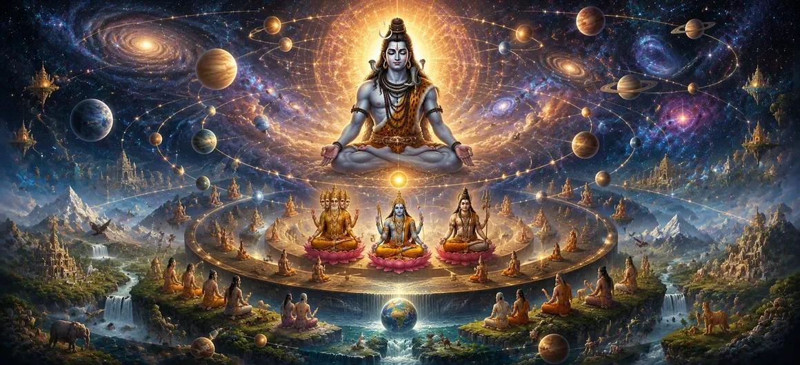

With Lord Brahma appointed as the creator and Lord Vishnu established as the eternal preserver, the foundations of the universe had been laid. Yet the work of creation was still incomplete. The countless worlds, celestial realms, natural elements, divine beings, and living creatures required a perfect order through which they could exist in harmony. Without such divine organization, even the greatest creation would descend into chaos. Understanding this eternal necessity, Lord Shiva revealed the sacred laws that govern the universe. Every deity, every cosmic element, every realm, and every living being was assigned its rightful place and purpose. Time itself began to flow according to divine rhythm, while Dharma became the eternal principle that would sustain balance throughout creation. Nothing in the universe was left without order, for every movement of existence reflected the infinite wisdom of the Supreme Lord. This profound chapter reveals how the cosmic order was established through the divine will of Mahadeva. It explains the harmonious relationship between creation, preservation, and the eternal laws that govern the universe. More importantly, it teaches that behind every natural law and every cycle of existence stands the supreme intelligence of Lord Shiva, whose perfect design continues to sustain the cosmos forever.
When Lord Brahma accepted the work of creation and Lord Vishnu embraced the sacred responsibility of preservation, the universe moved toward its destined perfection. Yet creation required more than divine beings—it required harmony. Every force of nature, every celestial realm, and every living creature had to function according to a divine arrangement so that the universe would remain stable throughout the endless cycles of time. The Supreme Lord therefore established a perfect balance in which each power complemented the others. Creation would continue without interruption, preservation would protect what had been created, and the eternal rhythm of existence would remain unbroken through the wisdom of Mahadeva.
Nothing within creation was accidental. Every deity, sage, celestial being, element of nature, and living creature was given a unique purpose by the Supreme Lord. The sun would illuminate the worlds, the moon would soothe creation, the winds would sustain life, the waters would nourish existence, and the sacred earth would support every form of life. The Shiva Purana teaches that when every being performs its rightful duty, harmony naturally prevails. Disorder arises only when beings forget the divine purpose for which they were created.
To preserve this perfect arrangement, Lord Shiva established Dharma as the eternal law of the universe. Dharma is not merely a set of religious practices; it is the divine principle that governs truth, justice, compassion, responsibility, and harmony. Every action performed in accordance with Dharma strengthens creation, while actions driven by ignorance disturb the natural balance. Through Dharma, every soul is given the opportunity to progress toward spiritual realization. It becomes the invisible foundation upon which the entire universe continues to exist.
Truth is the eternal foundation upon which creation stands.
Dharma preserves harmony among gods, nature, and humanity.
Every cosmic law exists through the infinite will of Lord Shiva.
Once the eternal principles of creation and Dharma had been established, the Supreme Lord arranged the various realms of existence. Every loka, from the highest celestial worlds to the earthly realm, was assigned its own purpose within the cosmic order. The gods resided in their heavenly abodes, sages pursued spiritual wisdom in sacred realms, while humanity was blessed with the unique opportunity to attain liberation through righteous living. This divine organization was neither random nor temporary. Every realm became part of a perfectly coordinated universe where all forms of life could fulfill their respective destinies according to the will of Mahadeva.
The universe was sustained through the perfect balance of the five great elements—earth, water, fire, air, and space. Each element performed its own sacred function while remaining dependent upon the others. Together they formed the physical foundation of all creation and supported every living being. The Shiva Purana teaches that these elements are not independent forces. They exist because of the Supreme Lord's divine power, and their perfect harmony reflects the wisdom through which the cosmos continues to flourish.
With the universe now perfectly arranged, the flow of time began according to the divine command of Lord Shiva. Days and nights, seasons, years, and great cosmic ages started their endless cycles. Through time, creation would grow, evolve, and eventually return to its divine source before beginning anew. Time itself was recognized as a sacred instrument of the Supreme Lord. It governs change, rewards righteous actions, reveals the consequences of karma, and reminds every soul that worldly existence is temporary while the Divine remains eternal.
Every world originates through the divine will of the Supreme Lord.
Every being has a sacred role within the cosmic order.
All existence ultimately rests in Lord Shiva, the eternal source of the cosmos.
Having established the principles of creation, preservation, and Dharma, Lord Shiva entrusted the administration of the universe to worthy divine beings. Every deity received a sacred responsibility according to divine wisdom. Some governed the elements of nature, others protected knowledge, prosperity, justice, rain, life, and spiritual progress. This divine administration ensured that the universe would function with perfect cooperation rather than conflict. Every celestial power worked together under the supreme authority of Mahadeva, maintaining balance across the countless worlds.
The Shiva Purana explains that no part of creation exists independently. The heavens depend upon the earth, the earth depends upon the elements, living beings depend upon nature, and all of them ultimately depend upon the Supreme Lord. This sacred interdependence reflects the unity that binds the entire universe together. Because every being is connected, every righteous action strengthens the harmony of creation, while selfishness and ignorance disturb the balance established by the Divine.
With every divine responsibility assigned and every cosmic law established, the universe stood complete in its structure. Yet one final element remained before creation could begin its endless journey through history. The worlds were ready, the gods were prepared, and Dharma had been established—but the great movement of time had not yet commenced. The sages eagerly awaited the next revelation, for only with the beginning of Time would the great ages of creation unfold according to the eternal plan of the Supreme Lord.
"Creation became complete through order, yet only the flow of Time could awaken its eternal journey. Every moment of existence moves according to the infinite wisdom of Lord Shiva."
The divine structure of the universe has now been established through the wisdom of Lord Shiva. Continue to the next chapter to discover the sacred origin of Time (Kala) and the eternal cycle of the Four Yugas.